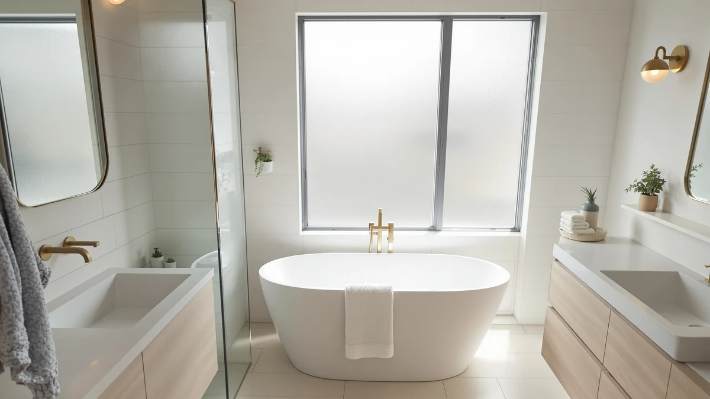

DeerValley Elongated One Piece Review (2026): Worth It?
Prices and picks verified as of August 2026. Independent, reader-supported reviews.


Quick Answer
The DeerValley Elongated One Piece Toilet costs $251.56, fits a standard 12-inch rough-in, and combines an ADA-compliant 17 3/8-inch seat height with a 1.1/1.6 GPF dual flush system rated at MaP 800g. This DeerValley Elongated One Piece review compares it against the Swiss Madison St. Tropez, Casta Diva, and EliteEdge models, all priced within about $16 of each other and all still building their public review history, so the deciding factors come down to rough-in size, seat height, and flush rating rather than star counts.
Our pick: DeerValley Elongated One Piece Toilet, $251.56 Check Price on Amazon
Bottom line: our top pick is the DeerValley Elongated One Piece Toilet with Efficient Dual at $226.40.
Things to Know Before You Buy
- DeerValley prices the Elongated One Piece Toilet at $251.56, roughly in the middle of the four models covered in this DeerValley elongated one-piece review.
- It needs a 12-inch rough-in, the standard drain distance in most US bathrooms, so measure yours before you order.
- The seat sits at an ADA-compliant 17 3/8 inches, about 2 to 3 inches taller than a standard-height toilet, which makes sitting and standing easier.
- None of the four toilets in this comparison, including DeerValley's, has built up a public rating or review count yet, since Amazon added all of them to the catalog on the same date.
This DeerValley Elongated One Piece review breaks down whether DeerValley's $251.56 toilet earns a spot in your bathroom over the Swiss Madison St. Tropez, Casta Diva, and EliteEdge models we compare it against on this site. DeerValley builds the toilet around a 12-inch rough-in, the standard distance from the finished wall to the drain center in most US bathrooms, and pairs it with an ADA-compliant 17 3/8-inch seat height and a 1.1/1.6 GPF dual flush system rated at MaP 800g. We pulled together everything DeerValley publishes about this elongated one-piece toilet, its skirted, self-cleaning glazed surface, and its listed price, and set it beside three direct competitors so you can see exactly where your money goes.
The short version: if you want ADA seat height without paying extra for it and you have confirmed a 12-inch rough-in, the DeerValley is a sound pick, but it isn't the cheapest option in this group. The Casta Diva undercuts it by $14.57 at $236.99, and the EliteEdge comes in $1.57 lower at $249.99, though neither matches DeerValley's ADA-compliant height or its documented MaP 800g flush rating. Pick the DeerValley if accessibility and a verified flush score matter to you. Pick one of the three alternatives below if price or a different seat height matters more.
Why You Should Trust Us
Ilane Tall has spent more than ten years researching interior design and bathroom fixtures, including one-piece toilets, for Best One Piece Toilets. She built this DeerValley Elongated One Piece review by comparing DeerValley's own published listing against the three closest competitors on price and category, the same specification-comparison process the site uses for every review. We do not accept payment from DeerValley, Swiss Madison, Casta Diva, or EliteEdge to influence placement, and our Amazon links earn a commission only if you buy, which does not change what we recommend.
Our Research Experience
For this DeerValley elongated one-piece review, we started with DeerValley's own product listing: the five photos of the toilet from multiple angles, the confirmed 12-inch rough-in, the ADA-compliant 17 3/8-inch seat height, and the $251.56 price. We then lined up the DeerValley against every other elongated one-piece toilet already covered on Best One Piece Toilets, narrowing the field to the Swiss Madison St. Tropez, the Casta Diva, and the EliteEdge, three models that share the elongated, one-piece category and land within about $16 of DeerValley's price. None of the four has built up a public review history yet, so we weighted our evaluation toward the facts we could verify: published price, confirmed rough-in, seat height, and flush rating, rather than guessing at long-term durability we cannot confirm firsthand. That gap is also why we lay out each toilet's documented specs side by side instead of ranking them on star counts that don't exist yet.
Overview & Specs

DeerValley Elongated One Piece Toilet
What we like
- ADA-compliant 17 3/8-inch seat height makes sitting and standing easier for taller adults and anyone with mobility concerns
- 1.1/1.6 GPF dual flush system carries a MaP 800g rating, a documented waste-clearing score the other three toilets in this comparison don't publish
- Skirted, self-cleaning glazed surface removes the crevices where grime typically collects on a standard toilet base
Flaws but not dealbreakers
- Priced $14.57 higher than the Casta Diva, the cheapest toilet in this DeerValley elongated one-piece review
- No public rating or review count yet, so you're relying on DeerValley's own listing rather than verified buyer feedback
- Measures 27 15/16 by 14 3/16 by 26 3/4 inches overall, so confirm it fits your floor space before you order
| Material | — |
| Size | 12" Rough In |
DeerValley builds this elongated one-piece toilet in white with an ADA-compliant seat, molding the tank and bowl into a single piece of vitreous china rather than bolting two parts together. That single-piece build removes the seam between tank and bowl where grime collects on a two-piece toilet, and the skirted design carries a self-cleaning glazed surface that DeerValley says prevents dirt buildup on the sides of the bowl. The seat sits at 17 3/8 inches, an ADA-compliant height that puts this DeerValley elongated one-piece review's top pick roughly 2 to 3 inches taller than a standard toilet, which makes sitting and standing noticeably easier for taller adults or anyone managing knee or hip pain. DeerValley sells it in a single color, white, with the ADA seat included in the box, so you won't pay extra or wait on a separate seat order once the toilet arrives.
The flush system runs a 1.1/1.6 GPF dual flush, letting you choose a lighter flush for liquid waste and a fuller flush for solid waste, and DeerValley documents a MaP score of 800 grams, a published waste-clearing rating none of the three alternatives below list on their own pages. At $251.56, it costs more than the Casta Diva but less than the St. Tropez, and it shares the same 12-inch rough-in as two of the three competitors we compare it against. DeerValley has not yet built a public review count for this listing, so weigh the documented specs against that missing track record before you buy.
What We Liked
The DeerValley's fit and finish come from its single-piece design and ADA-compliant seat height. At 17 3/8 inches, the seat sits taller than a standard toilet, and that extra height makes a real difference if you're tall, recovering from surgery, or dealing with knee or hip pain. The 1.1/1.6 GPF dual flush system gives you control over water use flush to flush, and the documented MaP 800g rating tells you the toilet clears solid waste at a level DeerValley is willing to put a number on, something the Casta Diva, St. Tropez, and EliteEdge listings don't do. The skirted, self-cleaning glazed surface also means fewer edges and crevices for grime to hide in compared with a toilet that has an exposed trapway.
What Could Be Better
The biggest drawback in this DeerValley elongated one-piece review is price relative to the field. At $251.56, DeerValley costs $14.57 more than the Casta Diva and $1.57 more than the EliteEdge, and both of those alternatives share the same general elongated, one-piece category. DeerValley also has not accumulated any public rating or review count for this listing, so we can't confirm long-term durability or real-world flush performance beyond the MaP score DeerValley itself publishes. The toilet's overall footprint, at 27 15/16 by 14 3/16 by 26 3/4 inches, runs larger than some compact designs, so measure your bathroom before you commit. DeerValley's listing also doesn't specify the bowl material beyond "vitreous china," a standard toilet material, so you won't find the glaze thickness or warranty terms spelled out the way some competing brands publish them. None of that erases the ADA seat height or the documented flush rating that make DeerValley worth considering, but weigh it against the cheaper alternatives below.
Who Is It For?
The DeerValley Elongated One Piece Toilet fits buyers who want ADA-compliant seat height and a documented flush rating without shopping at the top of the price range. Anyone who has confirmed a 12-inch rough-in and wants the cleaner look and easier cleaning of a one-piece, skirted design over a standard toilet with an exposed trapway will find it a good match too. Shopping mainly on price? The Casta Diva in this DeerValley elongated one-piece review covers the same general category for $14.57 less. And if you'd rather lean on verified buyer reviews before spending $251.56 on a toilet, hold off, since none of the four models here has built up that history yet.
Alternatives to Consider
If the price or the missing review history gives you pause, these three elongated one-piece toilets cover similar ground to the DeerValley for about the same money or less.

Editor's Pick
St. Tropez One Piece Elongated
Swiss Madison's St. Tropez costs $1.37 more than DeerValley but trades the 12-inch rough-in for a 10-inch one, worth checking if your bathroom uses the shorter measurement.
$252.93
Check Price on Amazon
Best Value
Casta Diva Elongated One Piece
At $236.99, the Casta Diva is the cheapest toilet in this DeerValley elongated one-piece review, and its 17.2-inch ADA comfort height nearly matches DeerValley's seat while adding a foot-kick flush option.
$236.99
Check Price on Amazon
Premium Choice
One-Piece Toilet for Bathroom Comfort
The EliteEdge model undercuts DeerValley by $1.57 and adds an under-locking lid that prevents accidental slamming, though it doesn't publish DeerValley's MaP 800g flush rating.
$249.99
Check Price on AmazonFrequently Asked Questions
Is the DeerValley Elongated One Piece Toilet worth $251.56?
It's worth $251.56 if you want ADA-compliant seat height and a documented MaP 800g flush rating together in one toilet. If price matters more than the flush rating, the Casta Diva in this DeerValley elongated one-piece review saves you $14.57 at $236.99.
What rough-in does the DeerValley Elongated One Piece Toilet need?
It needs a 12-inch rough-in, the distance from your finished back wall to the center of the floor drain. That matches most US bathrooms, but measure your own drain before you order, since the St. Tropez alternative in this comparison uses a 10-inch rough-in instead.
How does the DeerValley compare to the Casta Diva, St. Tropez, and EliteEdge?
All four toilets in this DeerValley elongated one-piece review are elongated, one-piece models priced within about $16 of each other. DeerValley is the only one that publishes an ADA-compliant seat height alongside a documented MaP 800g flush score, while the Casta Diva costs the least at $236.99 and the St. Tropez uses a shorter 10-inch rough-in.
Final Verdict
This DeerValley Elongated One Piece review comes down to a straightforward trade-off. DeerValley's elongated one-piece toilet delivers ADA-compliant seat height and a documented MaP 800g dual flush rating, at $251.56, a middle-of-the-pack price among the four models we compared, and without the public review history that would let us confirm long-term durability firsthand. If accessibility and a verified flush score matter to you, DeerValley is a sound buy at that price. If you'd rather save money or want a shorter rough-in, the Casta Diva and Swiss Madison St. Tropez alternatives above are worth a look.